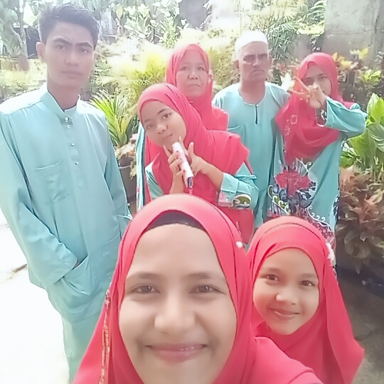
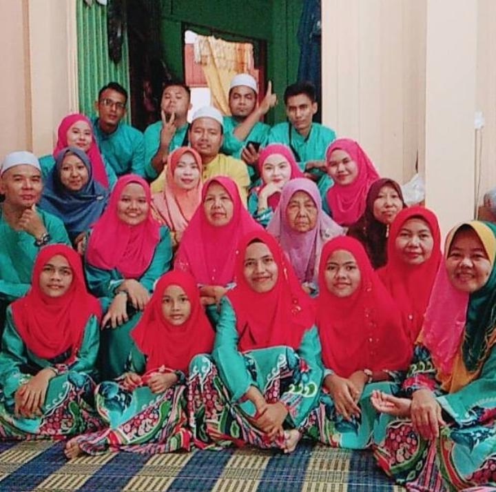
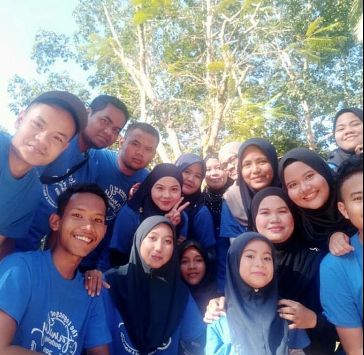
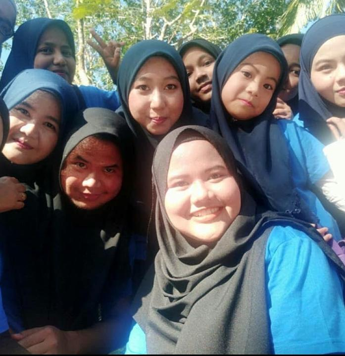
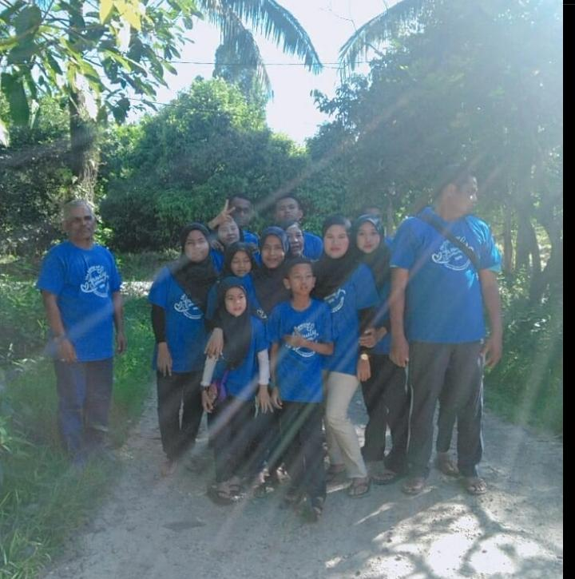

A little bit about me.Hope you enjoy to know my journey!
 
This is my family and my everything in the world. I have father his name is Ramli bin Ismail @ Suapiah. He work as labor. I have a very kind mother, her name is Mazanun binti Mahmood. My mother work as full-time house wife since got married with my father. I fave 5 sibling. First is my brother, his name is Muhammad Badrul Anuar and he is 23 years old and he still study at UiTM Permatang Pauh, Pulau Pinang in Degree Civil Enginering. Number 2 is me. Third is Faten NurBalqis, she is still study at secondary school at Sekolah Menengah Kebangsaan Tanah Merah (1) and she is 17 years old. Fourth is Faten Nur Adawiyah, she is 13 years old and study at Sekolah Menengah Kebangsaan Tanah Merah (2). Last one is Faten Ain Nabila, she is 10 years old and still study at primary school at Sekolah Kebangsaan Sri Suria (2). I have a big family which is POK SU MAHMOOD AND MOKSU JAROH family. This family is from my mother side and I very close than my father side. I have one granny, 7 aunty and 5 uncle and 13 cousin. I am very close with my MOKSU, her name is Norliza because she always make a delicious food for me. hehe.
  
This is our family day. Many laugh we make together on that day even it is only a small family day program that we only make it at village at grandmother house beacause of my grandfather condition and his health in not good to go far like at a beach. On that day we did many activities such as cycling, basketball, taking photo, playing badminton, watching horror movie togethers and more.